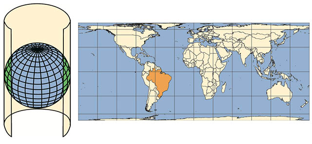
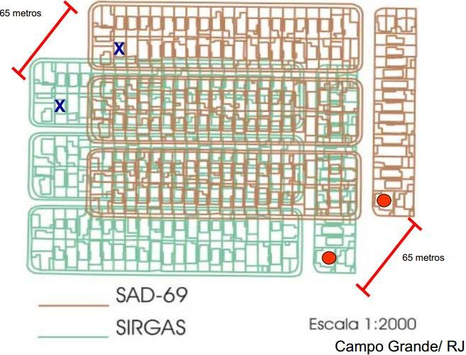

Sistemas de Referência de Coordenadas e Datum

Contextualização
Um dos primeiros assuntos que devemos entender antes de iniciar no mundo do Geoprocessamento são os conceitos de Sistema de Referência de Coordenadas e Datum. Esses conceitos atrelados à Cartografia apesar de parecerem simples para quem possui certa experiência na área de Geoprocessamento, muitas vezes são confundidos ou mesmo ignorados por aqueles que estão adentrando nessa área.
Dessa forma, minha intenção com esse post é transmitir esses conceitos de forma simples e objetiva, usando uma linguagem prática, para facilitar seu uso no dia a dia. Não adentro aqui em como aplicar esses conceitos em softwares de SIG ou toda a matemática envolvida. Para se aprofundar, recomendo livros específicos no final do post ou mesmo procurar disciplinas de Engenharia Cartográfica e/ou Geodéria.
Sistema de Referência de Coordenadas
Os dados geoespaciais (vetor e raster, explicados com detalhes neste post), possuem um componente fundamental, que é o Sistema de Referência de Coordenadas ou do inglês Coordinate Reference System (CRS), que define esses dados representam uma feição na superfície da Terra.
O Sistema de Referência de Coordenadas é composto de quatro componentes:
- Sistema de coordenadas: grade X e Y na qual os dados são sobrepostos e localizados no espaço
- Unidades horizontais e verticais: unidades usadas para definir a grade ao longo dos eixos X e Y
- Datum: versão modelada da forma da Terra que define a origem usada para localizar o sistema de coordenadas no planeta
- Informações de projeção: equação matemática usada para nivelar objetos que estão em uma superfície redonda para visualização em uma superfície plana
O Sistema de coordenadas é classificado com base nas Unidades horizontais e verticais que estão sendo utilizadas para a representação geográfica, podendo assumir dois tipos: ângulos para Sistema de Coordenadas Geográficas e metros para Sistema de Coordenadas Projetadas.
Outro componente é o datum, que é a relação desses sistemas de coordenadas com a superfície da Terra. O datum faz parte de uma área da Cartografia denominada Geodésia que estuda a forma e dimensões da Terra, campo gravitacional e a localização de pontos fixos e sistemas de coordenadas.
Por fim, as Informações de projeção que são equações matemáticas constituídas com base nas informações anteriores permite a representação e cálculos de propriedades das feições representadas nos mapas. Esse tópico não abordaremos aqui por estarem fora da minha alçada… Muito senos, cossenos, dericadas e integrais… Melhor deixar para os geofísicos e engenheiros cartográficos…
Veremos mais informações para o uso prático, focado no Sistemas de Coordenadas e Datum e como combiná-los para formar o Sistema de Referência de Coordenadas.
Sistema de Coordenadas Geográficas
O Sistema de Coordenadas Geográficas utiliza ângulos para representar feições na superfície da Terra através de dois valores: longitude e latitude. A longitude localiza-se na direção Leste-Oeste e a latitude localiza-se na direção Norte-Sul. Nesse sistema, a superfície da Terra geralmente é representada por uma superfície elipsoidal, pois a Terra é ligeiramente achatada nos pólos (Figura 1).

Figura 1: Sistema de Coordenadas Geográficas. Fonte: Documentação do QGIS.
Sistema de Coordenadas Projetadas
O Sistema de Coordenadas Projetadas utiliza um Sistema Cartesiano de Coordenadas em uma superfície plana. Dessa forma, à partir de uma origem, traçam-se eixos X e Y, e uma unidade linear, como o metro, é utilizada para representar as feições.
Todos as projeções são feitas a partir de sistemas geográficos, convertendo uma superfície tridimensional em uma superfície plana bidimensional. Sendo assim, essa conversão trás consigo algum tipo de distorção em relação à porção real, podendo ser distorções em: 1. formas locais, 2. áreas, 3. distâncias, 4. flexão ou curvatura, 5. assimetria e 6. lacunas de continuidade. Dessa forma, um sistema de coordenadas projetadas pode preservar somente uma ou duas dessas propriedades.
Dois vídeos ajudam a entender melhor essas distorções:
Todos os mapas do mundo são imperfeitos. Entenda as razões e as soluções para amenizar distorções
Why all world maps are wrong
Existem três grandes grupos de projeções: planares, cônicos e cilíndricos (Figura 2).

Figura 2: Sistema de Referência de Coordenadas Projetadas, dividido em três grupos: plana, cônica e cilíndrica. Fonte: Geographic Information System Basics.
Na projeção plana, também denominada Projeção Azimutal, o mapeamento toca o globo em um ponto ou ao longo de uma linha de tangência, sendo normalmente usado no mapeamento de regiões polares, sendo a mais comum a Projeção Azimutal Equidistante, a mesma utilizada na bandeira da ONU (Figura 3).

Figura 3: Projeção plana. Fonte: Atlas Escolar IBGE.
Na projeção cônica, a superfície da Terra é projetada em um cone ao longo de uma linha ou duas linhas de tangência, de modo que as distorções são minimizadas ao longo das linhas e aumentam com a distância das mesmas, sendo portanto, mais adequada para mapear áreas de latitudes médias, tendo como exemplo mais conhecidos a Projeção Cônica Equivalente de Albers e a Projeção Cônica Conforme de Lambert (Figura 4).
Figura 4: Projeção cônica. Fonte: Atlas Escolar IBGE.
Na projeção cilíndrica, a superfície da Terra é mapeada em um cilindro, sendo também criada tocando a superfície da Terra ao longo de uma ou duas linhas de tangência, sendo utilizada com mais frequência para mapear todo o globo, tendo como exemplo mais conhecido a Projeção Universal Transversa de Mercator (UTM), Projeção de Winkel Tripel e Projeção de Mollweide(Figura 5).

Figura 5: Projeção cilíndrica. Fonte: Atlas Escolar IBGE.
Datum
Como dito anteriormente, o datum é a relação do sistema de coordenadas com a superfície da Terra. Ele representa o ponto de intersecção do elipsoide de referência com a superfície da Terra (geoide, a forma verdadeira da Terra), compensando as diferenças do campo gravitacional da Terra (Figura 6).

Figura 6: Datum, Geoide, Esferoide e Elipsoide. Fonte: Ciência Hoje e Lapig.
Existem dois tipos de datum: geocêntrico e local (Figura 7). Para um datum geocêntrico, como o WGS84 - World Geodetic System 1984, o centro do elipsoide é o centro de gravidade da Terra e a precisão das projeções não é otimizada para um local específico do globo. Já em um datum local, como o SAD69 - South American Datum 1969, o elipsoide de referência é deslocado para se alinhar com a superfície em um determinado local, como por exemplo, na América do Sul para o SAD69 (Figura 7).

Figura 7: Datum global e datum local. Fonte: Aulas de Cartografia para Geoprocessamento do Programa de Pós-graduação em Computação, ênfase Geomática, UERJ.
No Brasil, desde 2015, o Instituto Brasileiro de Geografia e Estatística (IBGE) adotou utilizar o datum SIRGAS2000 - Sistema de Referencia Geocéntrico para las Américas 2000 para todos os mapeamentos realizados no Brasil, um esforço conjunto para adotar o mesmo datum em toda a América. Mais sobre esse datum pode ser lido aqui: SIRGAS2000 (Figura 8)

Figura 8: Sistema de Referencia Geocéntrico para las Américas (SIRGAS). Fonte: SIRGAS
Comparando os datum SAD69 e SIRGAS2000, podemos notar uma diferença de cerca de 65 metros, que à depender do mapeamento pode fazer uma grande diferença, a exemplo da planta de uma casa ou a construção de uma ponte (Figura 9)

Figura 9: Discrepância entre um mesmo ponto em SAD69 e SIRGAS2000 em regiões urbanas. Fonte: ‘SIRGAS 2000, quando iniciar a sua utilização?’
Uso na prática dos Sistemas de Referência de Coordenadas
Na prática, o uso dos Sistemas de Referência de Coordenadas é relativamente simples. Primeramente, devemos entender a diferença entre os Sistemas de Coordenadas Geográficas, Sistemas de Coordenadas Projetadas e Datum.
Uma vez entendido isso, podemos passar para o passo seguinte: definir qual o melhor datum para nossa região de interesse. E nesse passo, o IBGE já nos ajudou, devemos adotar sempre que possível o Datum SIRGAS2000, salvo raras exceções mais específicas que não adentraremos aqui. Além disso, há uma aproximação com o datum WGS84, facilitando a conversão de datum.
Por fim, devemos escolher se usaremos Coordenadas Geográfica ou Projetadas. Isso vai depender muito dos objetivos do nosso mapeamento. Se não faremos cálculos de áreas, ângulos ou distâncias, e estamos interessados em representar nossos dados da melhor forma possível, não há motivos para não escolher Coordenadas Geográficas. Logo, nosso Sistemas de Referência de Coordenadas ficaria dessa forma: Coordenadas Geográficas com Datum SIRGAS2000 ou WGS84. Essas coordendas geográficas podem ainda ser representadas em graus, minutos e segundos, ou em graus decimais.
- 23°23’23”S 42°42’42”O; WGS 84
- 23°23’23”S 42°42’42”O; SIRGAS 2000
- -23.38972, -42.71167; WGS 84
Agora, se o objetivo do mapeamento é o cálculo de áreas, distâncias ou formas, devemos usar Coordenadas Projetadas, pois as unidades são em metros. Mas aqui começa a complicação. Pela minha experiência prática, a primeira coisa a se considerar é a escala: se for uma escala local, podemos começar pelo uso do UTM, principalmente se todos os dados caem na mesma zona. Logo, nosso Sistemas de Referência de Coordenadas ficaria dessa forma: Coordenadas Projetadas UTM (zona) com Datum SIRGAS2000 ou WGS84, com coordenadas sempre representadas em metros.
- 23K 733876E, 7411482S; WGS 84
- 23K 733876E, 7411482S; SIRGAS 2000
Entretanto, se partimos para escala regionais (continente) ou globais (todo o mundo), devemos considerar projeções cônicas e/ou cilíndricas, repectivamente, além de observar as distorsões em área, distâncias ou formas, que ficam muito maiores a depender das que escolhemos. Basicamente existem três tipos de projeções: 1) conforme (não deforma ângulo)s, 2) equivalente (não altera áresas, e 3) equidistante (não deforma distâncias), e principalmente, quando nos afastamos das linhas linhas de tangência dessas projeções.
Códigos para os Sistemas de Referência de Coordenadas
Por fim, algo que ajuda a simplicar esses conceitos são o código numérico epsg e código em texto proj4string. O código EPSG (European Petroleum Survey Group) é uma sequência de numérica curta, referindo-se apenas a um CRS. O site epsg.io permite consultar diversas informações sobre um código, como procurar por um número do código, representação de mapas e fazer transformações de CRSs (Figura 10).
Já o código em texto proj4string permite mais flexibilidade para especificar diferentes parâmetros, como o tipo de projeção, datum e elipsóide. Dessa forma, é possível especificar muitas projeções, ou mesmo modificar as projeções existentes, tornando a representação proj4string mais complexa e flexível.
Além disso, ainda é possível consultar uma extensa lista de CRSs no site spatialreference.org, que fornece descrições em diversis formatos, baseados em GDAL e Proj.4. Essa abordagem permite consultar uma URL que pode produzir uma referência espacial em um formato que um software SIG pode utilizar como referência.

Figura 10: Site epsg.io com códigos EPSG. Fonte: epsg.io.
Para se aprofundar
Aqui ofereço apenas os conceitos básicos e bem superficiais, de forma prática. Para se aprofundar no tema, sugiro a leitura dos livros listados abaixo.
-
Lapaine, M., & Usery, E. L. (Eds.). (2017). Choosing a map projection. Springer International Publishing.
-
Oliveira, C. D. (1993). Curso de cartografia moderna. IBGE.
-
Nogueira, R. E. (2008). Cartografia: representação, comunicação e visualização de dados espaciais. Ed. UFSC.
-
Duarte, P. A. (2002). Fundamentos de cartografia. Ed. UFSC.